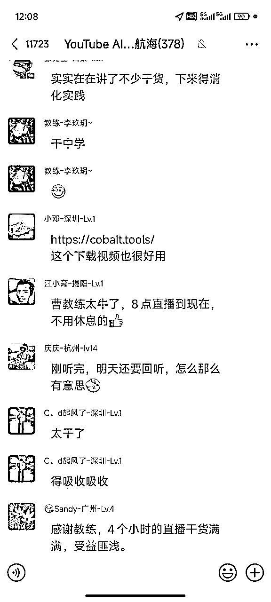
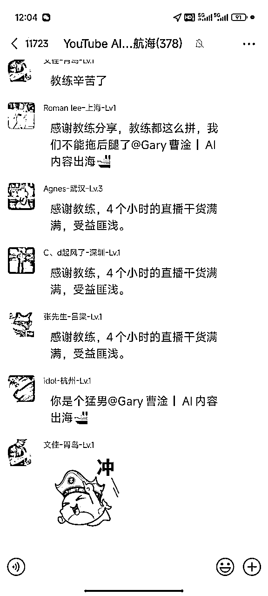
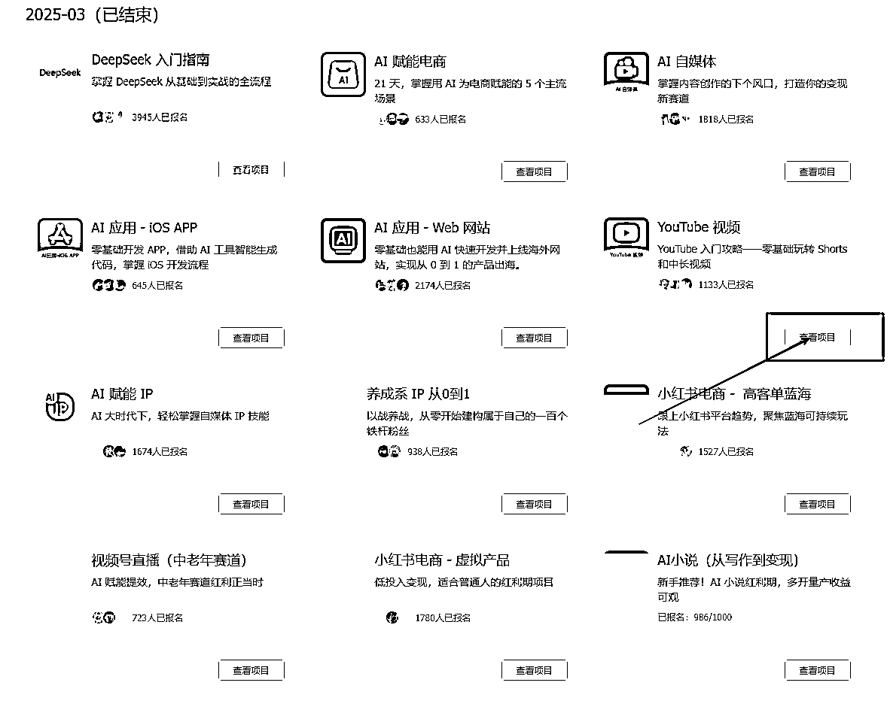
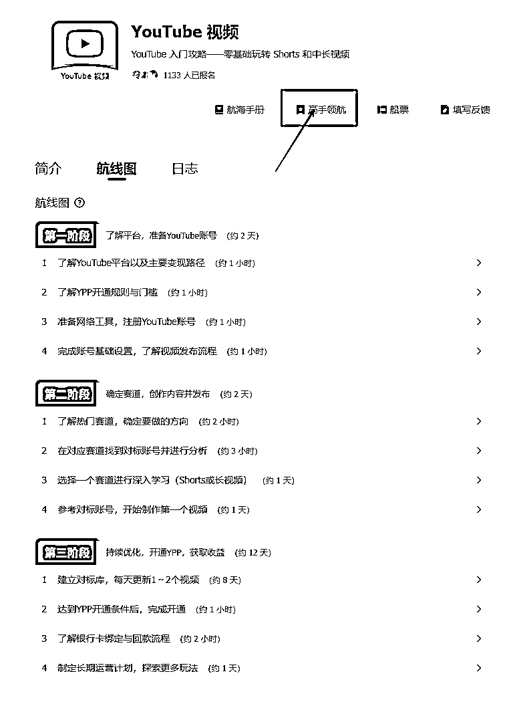
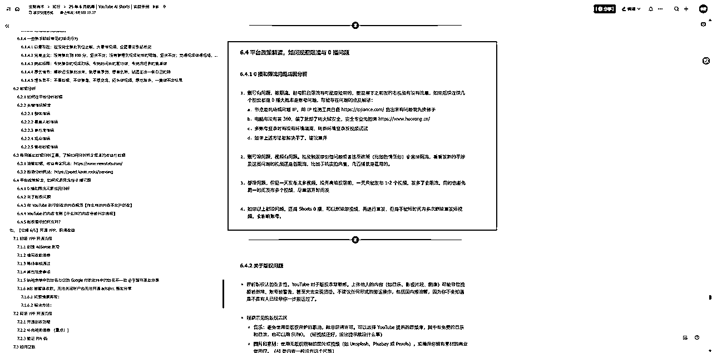
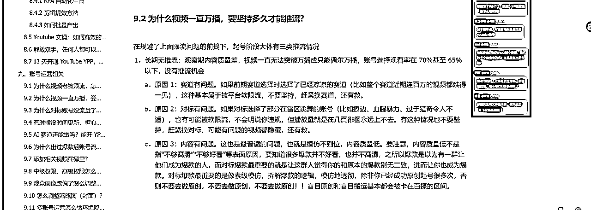
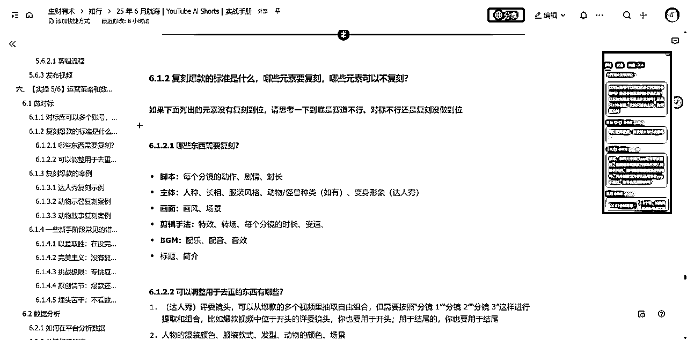
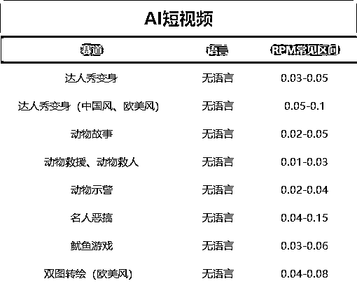
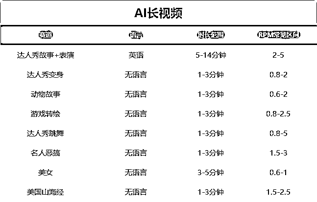
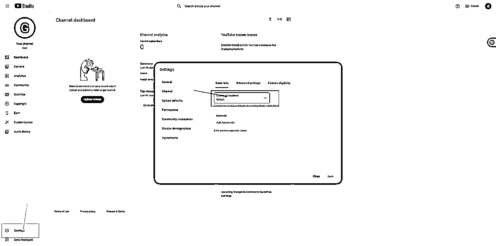

YouTube新人入局百问百答
来源：https://ncnmu5q1eqm9.feishu.cn/docx/GnD9dYD4Fo5UmVxd6GdcE4n3nc3
大家好，我是Gary曹淦，生财YouTube深海圈总教练，也是本次YouTube 航海教练。
起因是，本次YouTube航海开始后，群里的问题一如既往地多，虽然大多数问题在航海手册都有提及，但考虑到现场交流的效果一定远大于看文字，所以我在三个群里都提了几次：有问题，特别是复杂问题，都来直播间问，我会把所有问题回答完再下播，没想到这一回答就回答到了12点，差不多在直播间现场完成了一份百问百答。


本来想着这份问答就留在直播稿件里给大家看，但是第二天我仔细思考了一下，其实很多问题在大家作为新手刚开始起步的阶段还是非常有代表性，并且在直播间问出来，非常的新鲜和真实，可以说涵盖了大家在新手期会碰到的和想到的大部分问题，我想如果这次问答稍作整理，再加以补充，一定是一份价值相当高的YouTube新人入门宝典，毕竟解决一个问题的价值感要远大于学习了一大堆文字，所以参加完航海家大会就第一时间整理出了这篇帖子。
当然，解决问题的最好方式还是不让问题产生，所以大家还是要重视航海手册和各位前辈们精华帖的学习，把问题扼杀在萌芽状态，将这篇帖子作为查漏补缺之用即可，希望它给大家的YouTube之旅助上一臂之力，让大家早日在YouTube赚到第一桶金。
全篇内容分为学习路径（3问）、运营策略（34问）、赛道推荐（15问）、内容诊断（14问）、工具相关（12问）、收益与收款（9问）合计87问，内容较为精炼，建议本期YouTube航海新人船员、所有对YouTube感兴趣和刚起步的新人都全文浏览一遍，确保自己没有不清楚的问题，未来会少踩不少坑。
配套资料：
- 本场直播回放（前面直播间挂了，少了一个小时）：https://shengcaiyoushu01.feishu.cn/minutes/obcnwm613716j82lt2vz331o?from=from_copylink
- 航海手册：https://scys.com/view/docx/H5UodDcv4o5N2rx2OROcImFInod（价值非常高）
- 历史航海直播：https://scys.com/activity/documents?id=5122&index=1（价值非常高）
这篇帖子是新手向的，为了保证没有歧义、执行到位，一些问题用了比较绝对的说法，可能有失偏颇，有疑问可以评论交流，我会做出相应补充。
以及推荐同样是从航海群问答出发，把聊天记录整理成知识库的咱们深海圈&航海教练邵先森的精华帖：《航海期间，我用AI把N个天天999+的微信群聊做成了共享问答知识库》 https://t.zsxq.com/fyn8I
学习路径
- 新手怎么上手：手册+工具贴+看自己需要的直播回放（很重要）+实操


- 小白入门的时候，我自己一天花多少时间：我自己，去年11月，前面半个月，一天至少6-8个小时是有的（工具——GPT生成文本、生成图片MJ/comfyui、生成视频的学习runway、一些乱七八糟的工具、YouTube生态的学习——看历史所有的精华帖和手册教程和直播教程（当时国内基本搜不到这方面的内容，特别是AI赛道）、看别人做的视频刷对标、请教别人拿到结果的人、国内多平台分发视频号快手抖音小红书、复盘，基本一天一复盘，对自己的视频和数据做优化）
- 给新手选赛道的建议：看手册、看直播，别纠结，随便选一个做了再说，赛道会变、风向会变、当下的爆款会变，但是你的技能、你对内容的理解不会变，你就把做视频、前期的赛道尝试，当做学习
运营策略
- 频繁换赛道可以吗：可以换赛道，但不要频繁换赛道，这样会让YouTube根本不知道你的内容要推给谁，找不到受众。
- 做多少号有必要使用指纹浏览器：4个或4个以上，就上指纹浏览器+IP隔离，3个及以下，直接用同一个浏览器都可以。
- 注册时IP要隔离吗：一个IP不能注册多个账号，同时间注册2-3个号顶多了（如果不是大批量的起号，建议是买个号比较省事）
- IP网络问题：这里不能回答，群里的志愿者、领队、教练，都可以问，私聊问
- 批量发布使用RPA还是API：据我所知，目前没有发视频的api的，可以上自动化发布（RPA），但不推荐（有可能被检测出来你是机器人）
- 老频道之前没流量，现在想重启，能用吗：可以用，测试一下流量就行了
- 卡在注册账号：买号吧，不行找别人帮你买
- 对标是不是只对标一个频道：（对新人）对的，就对标一个，往死里对标；手册里写过
- YPP开通后会被取消吗：你违规、内容有问题，就会被取消，比如说做了宝宝掉进动物园，被救援的，被收回了一些号
- 一个视频可以同时发两个号吗：如果是为了重复利用没必要，没意义，等于搬运，除非是为了测流量筛账号。
- 频道名称需不需要与内容相关：相关最好，但影响不大；正经做，做一个你准备长期投入的赛道，你就做频道的装修， 包括频道名、头像、封面、首页，手册有写，都弄一下，对你的涨粉有帮助，间接对你起号有帮助；做shorts，核心还是内容
- 国内有粉丝基数、播放量基数的内容，分发到YouTube，行不行：1.你未来发布的内容，一定要设定时间同时发布，否则，一定有人到处搬运 2.你之前发过的内容，有没有被搬运过，大概率是有，但你也可以尝试，因为没有成本（并且，假设搬运了，大概率，你申诉不回来）
- ip的要求：不需要非常纯净，除非你碰到限流、封号的情况了，那可能有问题，你就要排除一下IP的问题
- 一个频道流量一直低：是不是限流？如果限流，一直限流，0播超过3天，直接换号（起号的时候），没必要浪费时间，所以一开始可以多开两三个号，来确保自己有一个号，是不限流的，然后着重投入在这个不限流的号商。如果不是限流的情况，那就是内容和赛道问题，看上面解法。（限流与0播问题手册有排查方法）

- 已经开通YPP的号，转型做长视频：可以，不影响，但是，你的shorts如果和长视频内容完全背道而驰，那你很难做长久，因为很难做起来。如果内容差很多，就只做长，或者只做短（可以短带长），如果内容差不多，就长短一起做，对账号起量、培养用户粘性，有帮助
- 关于开YPP这个事，网站上查的，很多不准。一般来讲，他在持续更新、达到了1000万的播放量，基本就是开通了YPP，没有人会为爱发电，何况那些内容，也没有什么爱
- 如果内容复制的成本越来越低的话，未来我们做 YouTube 这个项目的竞争壁垒岂不是也越来越低？
- （这个问题当时聊了不少，这里简化一下回答）AI出现之后，任何一个赛道都有这个问题，第一是，确实更低了，但有多少人知道并且去做了（可以类比公众号爆文、虚拟资料、AI自媒体等等任何赛道）？第二是，确实更低了，但先发就是最大的优势，你有更大的机会来建立起其他方面的壁垒（资源壁垒、规模壁垒）。第三是，有了时间窗口和先发优势，你有更多的选择权（知识付费可以吗，培训可以吗，卖铲子可以吗，做工具可以吗）事实是，这个极低成本和极大的增量空间导致了YouTube成为当下最蓝海的赛道之一，否则也不会冒出来我这样一个0出海基础、0视频基础的普通人在这里做分享。
- 一个IP能登几个号：一个IP管理三个号，三个号共用一个干净的IP是oK的
- 观众地区和频道的位置（地区、IP）有关系吗：没有任何关系。
- 怎么知道美国人爱看啥：去看美国人看的东西，创建一个新号，YouTube的地区选美国，刷美国人爱看的赛道；刷美国人的推特X、ins、fb、reddit。
- 怎么让视频有值钱的流量（调整观众的地区）：首先你要知道，越发达的地区，内容越难做，越便宜的地方，流量越容易拿；其次，观众分布由内容决定，美国人不会看印度农场鸡鸭牛羊的抽象故事，法国人不会看美国加州的禁毒工作做得怎么样，泰国人不会看日语视频。
- 起步阶段需要多账号运营吗：在不确定账号是否限流之前，多开一些号，筛选出有流量的号；筛出了有流量的号之后，持续地更新1-2个有流量的即可，不要分散精力，集中力量办大事，一个1000万的视频，抵得上1000个1万播的视频。
- 一个谷歌账号可以开多个YouTube频道吗：可以，但不要太多，3个差不多了，否则一封封一窝。（给新手的建议，老家伙们自己把握即可）
- 老号不确定是否能用，怎么测试流量：随便发东西，实拍、自己家的猫猫狗狗，风景，随便发。超过500播放，连续两三条，基本就不是限流号（但也不能排除，发了几条之后0播的情况，倒霉的话，总是还是筛号最稳妥）
- 批量搬运自己的视频可以吗：如果是同一个账号，搬运老视频重复发，可以，但不能太多，否则会被判定重复发布、垃圾内容，收回YPP（虽然很严重才会）；如果是不同账号，不要这么干
- 关于国内多平台分发：有时间，可以分发，不同平台统一时间发布，避免被搬运，但不要因为分发国内的平台导致自己精力跟不上，捡了芝麻丢了西瓜。
- 对标频道和赛道的时效性非常重要，如果你是从零开始，就直接找新的；如果你是一直在做，就在同一个赛道的里找新的对标。
- 用手机添加音乐和用电脑上传有带音乐的视频有版权上的区别吗：取决于音乐版权的管理方式，不同音乐的版权政策不一样，如果你选取的音乐是不分成的，那你用手机和电脑都一样。
- 短视频的标题重要吗：没有长视频那么重要，但会关系到给你推流的方向，所以模仿对标就行了
- 发视频用老频道，更容易起量，不容易限流，是被验证的事实。
- 刷对标的账号跟做视频的账号可以是同一个吗：随你用哪个号，没有关系。但是最好一个账号对应一个赛道的对标，否则刷到的视频会很杂。
- 短视频可以拼起来做长视频吗：可以，重复利用素材和扩大流量的经典解决方案
- 账号的违规的连坐规则是什么：要看具体情况，不一定，跟IP、发布动作、内容、浏览器环境都有关系。但，为什么要违规呢？绝大部分违规的行为都可以避免。
- 怎么样才算号做起来了：我的定义是，突破了观察期的万播（互动观看大于2.5万）魔咒，就是做起来了
- 偶尔的网络环境变更，没影响，YouTube并不是特别在意IP环境（网络环境），除非是很垃圾的IP
- 人物形象影响观众分布吗：直接影响你的受众，特征明显的白人、黑人、东亚人、南美、东南亚人，显然就是对应人种的观众爱看。
- 长视频怎么优化：最核心的就是封面、标题和SEO、以及开头几秒、以及内容整体质量➡️落实到数据，最直接的就是点击率（首页点击、推荐点击，跟同赛道的对手做比较）和完播率（30秒完播和整体完播）
- 有个功能叫做封面对比，同时上传三张封面做比较
- 去看那些头部账号的封面，viewstats可以看封面的变化记录
赛道推荐
- 长视频赛道推荐：看手册，看精华帖（有教程，有人做）
- 狗狗救婴儿怎么转型：故事类、救别的东西啊
- 短剧：卡点太多了，版权、账号、cms机构号、内容质量、翻译
- 中文类内容是否推荐：大方向不推荐，因为中文内容都是中国人做，中国人最卷，去做小语种都比做中文强；有自己的核心优势，另说
- 情感鸡汤，中文，太多人做了，不推荐。
- 知识IP：AI自媒体，去隔壁AI自媒体航海偷学一下航海手册跟直播回放，然后套到海外，这个绝对是YouTube的蓝海，其他的太卷了
- YouTube AI自媒体能做吗：强烈推荐，但是不要做中文，因为市场的需求是外语，甚至是小语种，日语、德语、法语、西语，等等，值钱的语种，需求量很大，而且不卷，而且，不难。
- AI机器人能做吗：现在AI机器人美女，还蛮火的，因为模型性能迭代了一轮，美女更好看了，更生动了，所以这个赛道又能做了。（当然，流量不算特别大，只是可以做的程度）
- AI音乐能做吗：一直都是最卷的AI赛道之一，对普通人完全不推荐。但是呢，AI音乐叠加其他的内容，是可以尝试的，比如说达人秀长视频（故事+音乐表演）运气教练就从0做了一条200万的长视频出来。
- 猫咪故事还能做吗：不要局限于表象，动物故事的精髓，在于故事本身，故事够精彩，就能爆，跟动物长什么样、什么动物，甚至是不是动物，都无关（搜一搜brainrot，美国山海经的故事，包括很多真人博主的实拍小故事）
- 小说推文能做吗：传统的不推荐，卷了这么多年了还做，普通人进场100%被卷死。但是创新版的可尝试，比如有数字人（真人）出镜的、配AI动画动漫的
- 名人恶搞还能做吗：从目前的流量情况出发，可以做，但是有潜在风险，因为使用了真实人物的肖像来制作AI内容（这个是国外4月出台的内容管理政策里提到了要管控的问题）去做动漫化的、非真人画风的，可以一定程度规避这个风险
- 疗愈赛道、AI心理学可以做吗：这个说法比较泛，要看具体的内容形式，什么其实都可以做，只要有对标、有市场、你有这方面的能力就行。疗愈和心理学的细分，实在是太多了，什么火柴人动画、科普、真人博主讲解、动漫、音乐，一大堆，找一个有上限且适合自己的切入就好了，一边做一边找更好的方向。
- 可以做NBA球星吗：我不了解这个赛道，如果你想了解，你就去看有没有头部的频道在做，并且做了一段时间，你需要保证1.别人能做成功（有对标）2.别人做了一段时间没死（没有版权、政策问题）
- 动漫向的赛道可以做吗：要注意版权，有些动漫有版权管理，做了可能被禁播或者版权警告，要看对标做什么，做的多不多，时长长不长，赛道本身可以做
内容诊断
- ai宠物，卡4000播放，日更三条，更新了26天，怎么调整（卡万播怎么办）：手册有写，4000说明内容质量差了，发布频率可以降低，打磨出更精品的作品，看平均观看时长百分比和选择观看率，用这两个数据作为导向，优化你的内容（核心：赛道+内容+账号或者多平台交叉检验）

- 短视频时长建议：我的建议是——跟着对标走，对标5秒，你就5秒，对标50秒，你就50秒，镜头的切换时间要一模一样，这才是对标
- 老频道发新赛道要不要删除：不需要，留着就行了，直接转赛道无所谓，随便你
- 图生图可以吗：可以，但不能复制粘贴，如果你图生图做出来是复制粘贴，那肯定判搬运，要有一定的差异，关于复刻标准手册里有写。

- 不要做儿童：指的是不要把儿童、未成年人、置于危险的环境中，比如掉进水里、掉进动物园里、扔下悬崖、房子着火，等等，这一类，不能做，不是说不能做儿童。宝宝走秀、宝宝变身、宝宝播客，这些东西都可以做
- 如果已经做了救婴儿类的赛道怎么办：如果你刚开始，就直接隐藏或者删除；如果你已经做了很多，甚至开通了YPP，那你就转型做其他赛道，别做了，也不用删除和隐藏，伸头一刀，缩头一刀，你不做了，相当于之前白干，你继续做，有可能被封，也有可能不被查，有概率白干，那你肯定继续做啊（转型，或者只差一点了，就冲了YPP再说）
- ai动物救援婴儿不能做了吗：是的，讲了好多次了
- 金毛救婴儿：狗狗救婴儿怎么转型：故事类、救别的东西啊
- NBA剪辑二创，为什么出版权0播：很多电视节目、影视节目、音乐，都有版权，YouTube的版权管理系统是最强大的一个，能够根据内容的id来识别或阻断所有复刻、使用该素材画面的内容。对于专业的工作室、团队来讲，做有版权风险的内容，都会做深度剪辑，去重，比如一个片段不超过5秒，多个电影合起来剪出一部电影的解说等等手段，减低被识别出来的风险，这个是有门槛有难度的。对普通人来说，最好的方案是不要碰有版权风险的内容。
- AI换脸搬运可以吗：你做了二创、并且有二创的证据就行（换脸不算二创，并且有未授权使用他人形象的风险，还需要叠加其他的，比如二次解说、二次剪辑等）
- 衡量AI内容及格线的标准（实际上，绝大部分非AI常规shorts赛道也一样）：观察期1w及格，2w优秀，除了限流情况（限流一般不会超过500播，意思说超过500播就可以通过这个1w的标准来判断自己赛道和内容是否及格）。
- 可以直接用对标账号的音频音效吗：前期可以，为了熟悉流程，可以接受。但一段时间以后，自己做，否则有被发现了之后手动举报的风险（不会自动查你）
- 上传视频清晰度低：最大的可能性是观看视频的清晰度没设置成高清。其次也有可能是视频还没被处理成高清格式你就点开看了
- 如何判断是否有版权问题，版权问题的体现有几种：
- 发了，没提示，但0播——可能被设置了不允许任何形式的转载和再利用，但没有惩罚
- 发了，没提示，但在发了之后被版权警告——被版权方检测到了之后，没有立马警告你，而是过了一段时间才警告你，这种也是最难防的
- 发了，有提示，部分地区禁播——只影响部分地区的观看，其他地区可以正常播放，一般也没有额外的营销
- 发了，有提示，全球禁播——设置了版权限制，直接从系统层面不允许你发布
- 发了，有提示，不限制播放，但分钱——没开通YPP没影响，但开通了，会分走你的YPP收益，常见于音乐版权
- 发了，有提示，不限制播放，所有钱全拿走——没开通YPP没影响，但开通了，一毛钱没有，常见于各种音乐版权
- 核心就是，对于不熟悉油管生态的新手来说，不要碰版权类的内容：影视、电视节目、综艺、短剧、动漫、小说、音乐。所以，这也是为什么AI赛道这么受欢迎，因为AI，绝对原创。
工具相关
- 一般推荐哪个工具：
- 首尾帧：pixverse4.5 性能、性价比，是最适合做首尾帧
- 故事类的（不需要首尾帧）：
- 省钱：即梦3.0&智谱清影&veo2（aistudio）
- 自动化、大批量产视频：vidu Q1（支持无限生成，并且性能比runway强）
- 批量下载：手册有，阿龙教练都写过程序，自己用cursor写一个也行；图省事能接受付费就咸鱼买哼哼猫（我自己也在用）
- AI内容前期投入多少钱：成本最低的方式是：白嫖（谷歌的aistuidio，拆脚本、倒推提示词，都是免费的，甚至，aistudio可以生成图片和视频，只是质量没那么高；即梦、可灵海外版，都可以白嫖，注册新号，白嫖免费额度）不嫌麻烦的话，你一直白嫖都行。等你想节省时间、提高效率、提高视频制作的质量，你再去选择更合适的、收费的工具
- VEO3一个月生成几个：Gemini的pro会员，每个月有10个免费+每天3个的额度（大概，可能会改）；其次，Gemini的ultra会员（250刀那个），每个月12500积分，相当于125个veo3的视频
- 动物故事类赛道用那些工具：最简单的版本——GoogleAIstudio出脚本（复刻脚本）、豆包出图（出套图，一次性出完）、豆包/即梦出视频，剪映剪辑
- 英文配音：elevenlabs、minimax（海螺的海外版）
- 工作流用扣子还是自己写脚本：能问出这个问题的话，用别人现成的工作流或者脚本最合适，能自己搭工作流或者写脚本的一定清楚自己需要怎么选择。
- 香港节点可以用吗：不推荐，虽然可以用YouTube，但用不了aistudio、Gemini、whisk、imageFX等等谷歌系的工具
- stablediffusion和comfyui需要学吗：不推荐新人去了解，没必要，现在的闭源工具太强了
- runway有必要买吗：其实落后时代了，不一定要用。除非买非常便宜的一次性账号（无限账号低于400）
- 常用浏览器插件：沉浸式翻译、viewstats
- 达人秀的评委素材从哪来：在AGT的官方账号和别人的视频里拿，做一个你自己的素材库
收款与收益
- 美刀能提现吗：能，看手册，线上结汇
- 目前YouTubeAI赛道单人收益比较高的水平在什么区间：3000-4000刀/月（AI赛道，不搞自动化搞精品赛道，现在这个时间点，我认为还有很大空间）
- 收汇的银行推荐：首选招行，因为大家都是用招行，没有问题。不推荐四大行，四大行结汇麻烦，可能要去柜台。没有招行，可以考虑兴业之类的，提前打电话问，需要收汇，能不能线上，需不需要提供额外的手续，问清楚
- 开通YPP之后，隐藏了视频，如果播放次数/播放时长达不到要求了，就会取消你的YPP资格。如果开通了YPP，是婴儿救援类赛道的，你先转型做别的，攒到1000万播放， 再把之前的隐藏。
- 相对精准的收益计算方式：
- 短视频=YPP开通后（一般减去1000万即可，实际肯定不止1000万）的互动观看次数（一般，总播放量/2即可）*赛道RPM（如下图）
- 长视频=YPP开通后（一般可以减去10万，其实就是根据视频时长判断4000小时需要多少次观看）的观看次数*赛道RPM（如下图）


- 开通YPP的数据时限：短视频是3个月以内达标1000万次，长视频是1年内达到4000小时
- ads和YPP的对应关系：一个ads账号建议绑定5个YPP（实际上可以更多）
- 一个人可以开几个ads账号：一套身份信息一个。可以用爸爸妈妈爷爷奶奶的身份信息注册。
- 在国内收款有风险吗：开通YPP，要求账号地区不能在中国（这个设置项可以改，不影响）也不影响我们收钱，只是YPP申请不对大陆开放而已，没说不能让大陆人收款（收款了记得年底报税，否则有税务风险）
